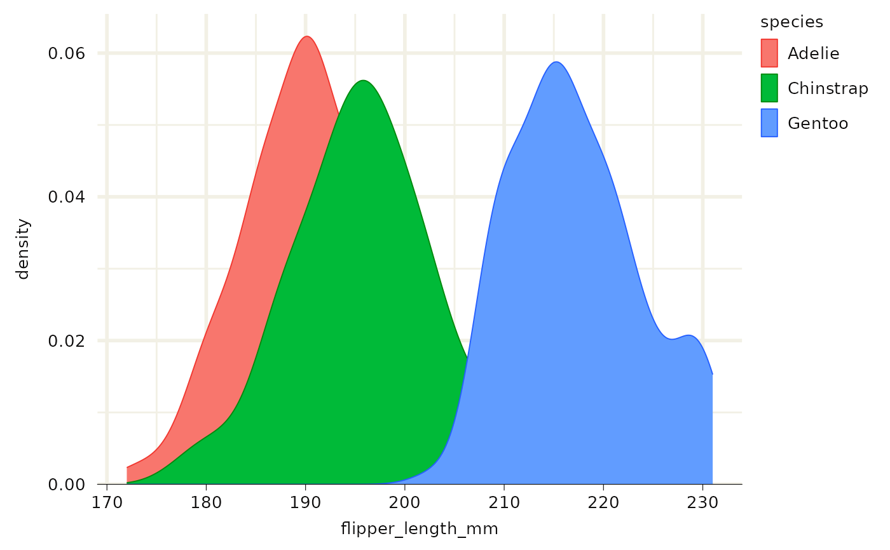
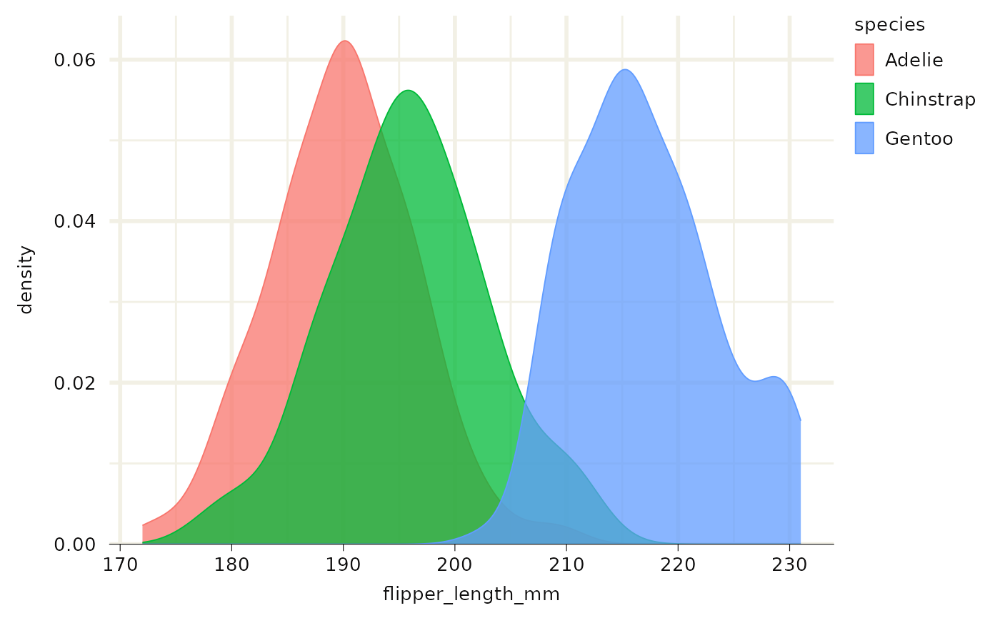

Use set_blanket to:
Set a global theme via
ggplot2::set_theme()Set a global option for how themes are to be refined based on plot scale types via
refineUpdate the global theme
fill,colour,linewidth,shape,linetype,size,strokeUpdate the global theme
fill_palette,colour_palette,shape_paletteandlinetype_paletteSet a global option for
colour_border, which is a function to transform thecolourandcolour_palettewith input of thefillandfill_paletterespectivelySet a global option for
fill_border, which is a function to transform thefillandfill_palettewith input of thecolourandcolour_paletterespectively.Set a global option
coord_clip.
Usage
set_blanket(
...,
theme = ggrefine::theme_grey(),
refine = ggrefine::modern,
fill = "#357BA2FF",
fill_palette = list(jumble::jumble, viridis::turbo(n = 256)),
fill_border = NULL,
colour = fill,
colour_palette = fill_palette,
colour_border = NULL,
linewidth = 0.66,
linewidth_border = 0.33,
shape = 21,
shape_palette = scales::pal_manual(c(21, 24, 22, 23, 25)),
linetype = 1,
linetype_palette = scales::pal_manual(1:6),
size = 1.5,
stroke = 0.33,
coord_clip = "off"
)Arguments
- ...
Not used. Forces named arguments.
- theme
A ggplot2 theme. Defaults to
ggrefine::theme_grey().- refine
A refine function. Defaults to ggrefine::modern.
- fill
Default fill colour. Defaults to
"#357BA2FF".- fill_palette
Palette for fill scales. A single discrete palette or
list(discrete, continuous). Defaults tolist(jumble::jumble, viridis::turbo(n = 256)).- fill_border
When
border = TRUE, a function applied tofillandfill_paletteto derive the fill. Defaults to\(x) x.- colour
Default colour. Defaults to
fill.- colour_palette
Palette for colour scales. Same format as
fill_palette. Defaults tofill_palette.- colour_border
When
border = TRUE, a function applied tofillandfill_paletteto derive the colour. Iffill_borderisNULL, defaults toblends::multiply()for light panels andblends::screen()for dark panels. Otherwise defaults to\(x) x.- linewidth
Default linewidth. Defaults to
0.66.- linewidth_border
When
border = TRUE, the default linewidth. Defaults to0.33.- shape
Default point shape. Defaults to
21.- shape_palette
Palette for shape scales. Defaults to
scales::pal_manual(c(21, 24, 22, 23, 25)).- linetype
Default linetype. Defaults to
1.- linetype_palette
Palette for linetype scales. Defaults to
scales::pal_manual(1:6).- size
Default point size. Defaults to
1.5.- stroke
Default stroke for point geoms. Defaults to
0.33.- coord_clip
Whether drawing is clipped to the panel. Either
"on"or"off"(default).
Examples
set_blanket(
fill_palette = scales::pal_hue(),
)
palmerpenguins::penguins |>
gg_density(
x = flipper_length_mm,
fill = species,
)
#> Warning: Removed 2 rows containing non-finite outside the scale range
#> (`stat_density()`).
#> Warning: Removed 2 rows containing non-finite outside the scale range
#> (`stat_density()`).

set_blanket(
fill_palette = scales::pal_hue(),
fill_border = \(x) scales::alpha(x, 0.75),
)
palmerpenguins::penguins |>
gg_density(
x = flipper_length_mm,
fill = species,
)
#> Warning: Removed 2 rows containing non-finite outside the scale range
#> (`stat_density()`).
#> Warning: Removed 2 rows containing non-finite outside the scale range
#> (`stat_density()`).
